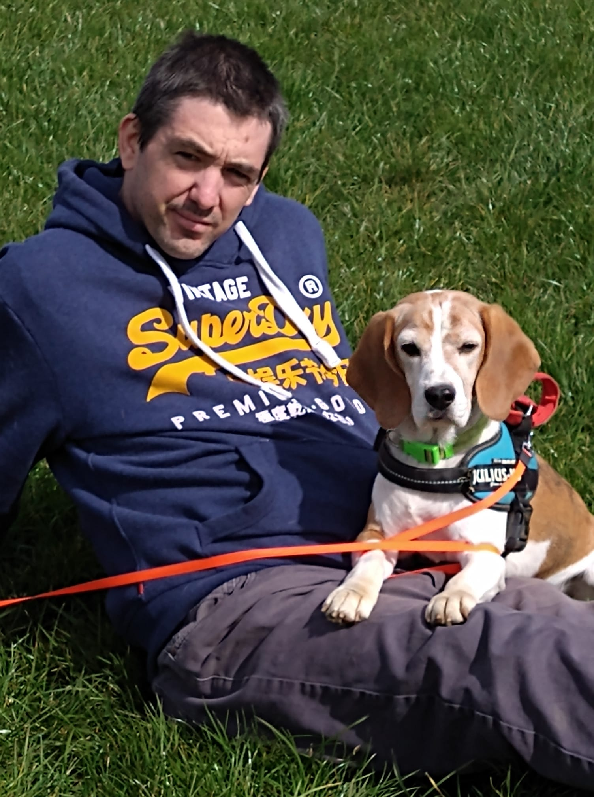

Jonas Trap
full stack developer & System integration Specialist
38 jaar, Nieuwwrode, Belgie. Van Hardware naar code - 17 jaar IT ervaring gecombineerd met fresh development skills. Specialist in backend systemen, scripting en team leadership.
17+
jaar ervaring
3
jaar management
Mijn Sterke Punten
- Backend Development
- System Administration
- Team Leadership
- Probleemoplssing
- Powershell Scripting
- Netwerkbeheer
In Ontwikkeling
- Frontend design
- Moderne Fronted Frameworks
- Portfolio Projecten
- UI/UX Design
- Mobile Development
Persoonlijke Interesses
Live Poker & Petanque Competitie - Strategisch denken en teamwork die perfect aansluiten bij mijn ICT-carrière
Klik hier om mijn professionele reis door de ICT-wereld te ontdekken